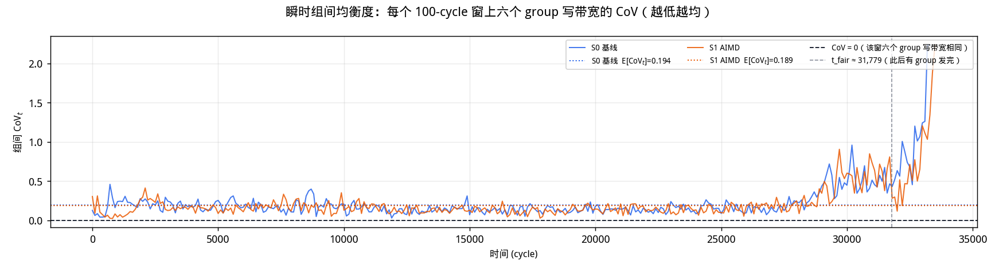
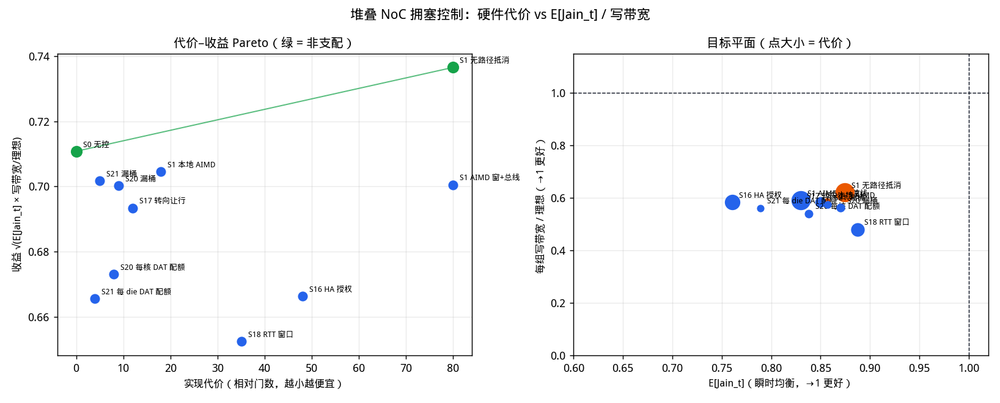

bottom die 横环 4 cycle / 纵环 6 cycle / 挂接点转向 5 cycle。 D2D landing 在 bottom die 上有两个独立接口（接横环、接所在列纵环）， 并用 HPCA'22 SWAP 与有界落地 buffer 解交叉死锁。 带宽口径为瞬时带宽，写带宽单位为 flit/cycle。 workload：burst 128 B、stride 4096 B、 tiling_size 64 KB × 4 tile / core （每核 2048 笔 WriteNoSnp，共 122,880 笔）。 地址按 128 B 交织到 96 个 HA，每核覆盖全部 HA （每核打到同一 HA 的次数 21–22）。 每 core outstanding = 512。 每个 HA 跟踪表 32 项，满了走请求 retry （RetryAck → PCrdGrant → 重发 REQ），不是源端控速。


| 方案 | 批次是否排空 | 完成事务 | makespan | 达下界比例 （综合下界 / makespan） | E[Jaint] | 偏转次数 |
|---|---|---|---|---|---|---|
| S0 基线（无源端流控） | 完成 | 122,880 / 122,880 | 88,504 | 60.7% | 0.8300 | 376,936 |
| S1 源端 AIMD 控速 | 完成 | 122,880 / 122,880 | 90,638 | 59.3% | 0.8277 | 403,752 |
达下界比例 = 综合下界 / makespan。 综合下界是链路、端口、织物切割、单事务时延四条下界的最大值 （本批次是纵环切割 53,760 cycle）。 100% 表示批次在这个最短可能时间里排空； S0 60.7% 表示实际用了下界的 1.65 倍时间， 写带宽也只有理想的同样比例。 全程完成量 Jain / max/min / CoV 在批次排空后必接近 1，不区分方案， 表里改列 E[Jaint]：每个 50-cycle 窗上六个 group 写带宽的 Jain，再对竞争窗口平均。
怎么读曲线。 纵轴是该 top die 10 个 AI core 合计的 WriteData 上环速率 （flit/cycle，50 cycle 滑窗）。 黑色虚线是均衡流量下的理想每组写带宽 1.524 flit/cycle （122,880 笔 × 4 WriteData / 下界 53,760 cycle / 6 组）。 六条线若贴着这条虚线且缠在一起，才是瞬时也均衡； 贴着虚线但上下散开，就是长程均、短时轮流抢。 下面一张是每个窗的组间 Jaint，点线是 E[Jaint]， 虚线 1.0 是全程 Jain(E[x])。 S0 的 E[Jaint] = 0.8300， S1 为 0.8277。
| 项目 | 取值 | 说明 |
|---|---|---|
| top die 数量 | 6 | 每个是 20 节点、双平面、双向 full ring |
| 每 die 节点角色 | 10 core / 8 D2D bridge / 2 非终端 | 偶数号为 AI core；节点 9、19 既非 core 也非 HA，只转发 |
| AI core 总数 | 60 | 发起方 |
| HA 总数 | 96 | bottom die，12 行 × 8 列 |
| D2D 链路 | 48 | 每 die 8 条，双向，跨 SerDes |
| 挂接点 / bottom D2D | 48 | 按“2 横 × 4 列 = 8 个”一组。每个 D2D landing 两个独立接口：一个接该处横环，一个接所在列纵环。D2D→横、D2D→纵、横↔纵转向是三条 FIFO，只在出环 hop 上互斥；交叉方向靠 SWAP 解死锁 |
| bottom die NoC | 6 横 + 8 纵 half ring | half ring = 单向闭环，仍然回绕，但只走一个方向 |
| 纵环长度 | 18 | 12 个 HA + 6 个挂接点交替排列 |
| 有向链路总数 | 768 | top 480 / D2D 96 / 横 48 / 纵 144 |
| CHI 虚通道 | req / rsp / dat | REQ、RSP、DAT 三条链路独立：每条有向边每拍可同时走 1 REQ + 1 RSP + 1 DAT，互不抢槽 |
| 写带宽单位 | flit/cycle | WriteData 上环速率；织物瞬时 hop 同单位 |
| SWAP（HPCA'22） | 开 | 横↔纵挂接点、D2D↔横、D2D↔纵：两拍 flit 互换，各走对方腾出的 hop，不进 FIFO、不加转向时延 |
| D2D 落地 buffer | 16 / (挂接点, 目标环, VC) | SWAP 和环 FIFO 都没进时的有界落地队列，下拍再参与 SWAP |
| 每笔写的 flit 数 | REQ 1、RSP 2、DAT 4 | WriteNoSnp 四段握手：REQ → DBIDResp → WriteData → Comp |
| 每 core outstanding | 512 | 在途上限：从 REQ 上环占到 Comp 回来。最长无拥塞写 RTT 是 413 cycle |
| HA 请求跟踪表 | 32 项 / HA | 满了走请求 retry：回 RetryAck，再发 PCrdGrant 后重传 REQ |
| 转向 / D2D FIFO 深度 | 64 / 128 | 唯一允许缓冲的地方；链路本身严格无缓冲 |
| workload | burst 128 B / stride 4096 B / tile 64 KB × 4（每核 2048 笔） | 二维密铺：每行 stride/burst 笔，tile/stride 行。128 B 交织到 96 个 HA，每核均匀覆盖全部 HA |
| 链路 | 延迟 | 说明 |
|---|---|---|
| top die 环内链路 | 1 / 2 / 3 / 4 cycle | 共 20 段，按位置不同；两个平面各一份 |
| D2D 跨 die | 4 cycle | SerDes + 跨时钟域 |
| bottom die 横环节点间 | 4 cycle | 挂接点 → 挂接点，单向 half ring |
| bottom die 纵环节点间 | 6 cycle | HA ↔ 挂接点，单向 half ring |
| 挂接点转向 | 5 cycle | 横环 ↔ 纵环，经转向 FIFO；D2D 落地走自己的横/纵接口，不再和转向共队列 |
| D2D bottom 双接口 | 横环口 + 该列纵环口 | SerDes 仍是一条 D2D 边；落地后可同时上横环和上纵环 |


| 目标 HA 所在列 | 位置 | 用的 D2D bridge 节点号 | 该 bridge 在 8 个中的序号 | 组内位置 | 目标列 mod 4 | 落到哪条横环 | 符合 mod-4 规则 |
|---|---|---|---|---|---|---|---|
| 0 | 本 die 的 4 列 | 1 | 0 | 0 | 0 | 近端横环 H1 | 完成 |
| 1 | 本 die 的 4 列 | 3 | 1 | 1 | 1 | 近端横环 H1 | 完成 |
| 2 | 本 die 的 4 列 | 5 | 2 | 2 | 2 | 近端横环 H1 | 完成 |
| 3 | 本 die 的 4 列 | 7 | 3 | 3 | 3 | 近端横环 H1 | 完成 |
| 4 | 另一半的 4 列 | 11 | 4 | 0 | 0 | 远端横环 H0 | 完成 |
| 5 | 另一半的 4 列 | 13 | 5 | 1 | 1 | 远端横环 H0 | 完成 |
| 6 | 另一半的 4 列 | 15 | 6 | 2 | 2 | 远端横环 H0 | 完成 |
| 7 | 另一半的 4 列 | 17 | 7 | 3 | 3 | 远端横环 H0 | 完成 |
一个 top die 的 10 个 AI core 共用一条环、一组 8 个挂接点和 8 条 D2D， 是不可再往下调度的单位。下表是整次运行的合计（flit/cycle）；上图是同一指标的时间展开。 S0 每 die 平均 0.9256 flit/cycle， 六 die 合计 5.5537 flit/cycle。 均衡理想每组 1.524 flit/cycle （六组合计 9.143）。
| outstanding | 方案 | 排空 | 各 die 写吞吐 (flit/cycle) die 0 / 1 / 2 / 3 / 4 / 5 | 合计 flit/cycle | E[Jaint] （瞬时） |
|---|---|---|---|---|---|
| 512 | S0 | 完成 | 0.9256 / 0.9256 / 0.9256 / 0.9256 / 0.9256 / 0.9256 | 5.5537 | 0.8300 |
| 512 | S1 | 完成 | 0.9038 / 0.9038 / 0.9038 / 0.9038 / 0.9038 / 0.9038 | 5.4229 | 0.8277 |
全程 Jain / max/min 是时间积分：每个 die 写完同样多的 WriteData， 排空后必为 1。瞬时（或 50-cycle 窗）六条线可以轮流高低。 因此用每个窗上六个 group 写带宽的 Jain，再对竞争窗口 （t ≤ t_fair）取平均，记为 E[Jaint]，作为瞬时均衡度。 S0 = 0.8300，S1 = 0.8277， 和 AIMD 几乎无关。窗越长这个数字越接近 1，比较方案时固定 50 cycle。
| 指标 | S0 | S1 | 含义 |
|---|---|---|---|
| E[Jaint]（瞬时均衡度） | 0.8300 | 0.8277 | 每个 50-cycle 窗上六个 group 写带宽的 Jain，再对竞争窗口平均。1 = 每个窗都均；1/6 ≈ 0.17 = 一窗只一家 |
| Jain(E[x])（全程完成量） | 1.0000 | 1.0000 | 先对时间平均再算 Jain。批次排空时六个 die 完成量相同，必为 1 |
| 轮换指数 1 − E[Jaint]/Jain(E[x]) | 0.170 | 0.172 | 长程均、短时不均的程度。0 = 每个窗都均 |
| 窗内 Jain 中位数 / 最小 | 0.8516 / 0.3388 | 0.8617 / 0.2771 | 竞争窗口内 |
| Jaint < 0.90 的窗占比 | 68.3% | 64.0% | 短时明显不均的时间比例 |
| 窗长 / 计入窗数 | 50 / 1,718 | 50 / 1,775 | 只计 t ≤ t_fair 且该窗总写带宽 > 0 |
| 均衡理想每组写带宽 | 1.524 flit/cycle | 1.524 flit/cycle | n_txn × WriteData / 综合下界 / 6 组 = 122,880 × 4 / 53,760 / 6。下界是纵环切割 53,760 cycle |
| 均衡理想六组合计 | 9.143 flit/cycle | 9.143 flit/cycle | 若跑到下界且组间均分，全芯片 WriteData 上环速率 |
CW = 顺时针（环下标 +1），CCW = 逆时针。次数含该核发出的 REQ 和 WriteData。 失败 = 环 slot 忙或 I-tag 挡住，不含 outstanding / AIMD 拒发。 成功 CW/CCW、失败 CW/CCW 是次数比（CW ÷ CCW）。
| die 0 AI core | 成功 CW | 成功 CCW | 成功 CW/CCW | 成功合计 | 失败 CW | 失败 CCW | 失败 CW/CCW | 失败合计 |
|---|---|---|---|---|---|---|---|---|
| core 0（环位 0） | 5,984 | 5,827 | 1.03 | 11,811 | 1,783 | 761 | 2.34 | 2,544 |
| core 2（环位 2） | 5,956 | 5,848 | 1.02 | 11,804 | 1,390 | 878 | 1.58 | 2,268 |
| core 4（环位 4） | 5,848 | 5,972 | 0.98 | 11,820 | 1,119 | 958 | 1.17 | 2,077 |
| core 6（环位 6） | 5,814 | 5,985 | 0.97 | 11,799 | 963 | 1,249 | 0.77 | 2,212 |
| core 8（环位 8） | 5,915 | 5,902 | 1.00 | 11,817 | 853 | 1,360 | 0.63 | 2,213 |
| core 10（环位 10） | 6,001 | 5,813 | 1.03 | 11,814 | 1,445 | 766 | 1.89 | 2,211 |
| core 12（环位 12） | 5,886 | 5,905 | 1.00 | 11,791 | 1,226 | 968 | 1.27 | 2,194 |
| core 14（环位 14） | 5,821 | 5,963 | 0.98 | 11,784 | 1,104 | 1,072 | 1.03 | 2,176 |
| core 16（环位 16） | 5,882 | 5,936 | 0.99 | 11,818 | 971 | 1,162 | 0.84 | 2,133 |
| core 18（环位 18） | 5,971 | 5,825 | 1.03 | 11,796 | 886 | 1,255 | 0.71 | 2,141 |
| die 0 合计 | 59,078 | 58,976 | 1.00 | 118,054 | 11,740 | 10,429 | 1.13 | 22,169 |
| die 0 AI core | 成功 CW | 成功 CCW | 成功 CW/CCW | 成功合计 | 失败 CW | 失败 CCW | 失败 CW/CCW | 失败合计 |
|---|---|---|---|---|---|---|---|---|
| core 0（环位 0） | 6,040 | 5,895 | 1.02 | 11,935 | 1,222 | 1,095 | 1.12 | 2,317 |
| core 2（环位 2） | 6,027 | 5,911 | 1.02 | 11,938 | 1,103 | 1,108 | 1.00 | 2,211 |
| core 4（环位 4） | 5,906 | 6,028 | 0.98 | 11,934 | 915 | 1,009 | 0.91 | 1,924 |
| core 6（环位 6） | 5,863 | 6,053 | 0.97 | 11,916 | 712 | 1,162 | 0.61 | 1,874 |
| core 8（环位 8） | 5,950 | 5,970 | 1.00 | 11,920 | 833 | 1,060 | 0.79 | 1,893 |
| core 10（环位 10） | 6,073 | 5,892 | 1.03 | 11,965 | 1,390 | 642 | 2.17 | 2,032 |
| core 12（环位 12） | 5,948 | 5,977 | 1.00 | 11,925 | 1,489 | 782 | 1.90 | 2,271 |
| core 14（环位 14） | 5,891 | 6,023 | 0.98 | 11,914 | 1,074 | 1,000 | 1.07 | 2,074 |
| core 16（环位 16） | 5,953 | 5,977 | 1.00 | 11,930 | 1,196 | 1,333 | 0.90 | 2,529 |
| core 18（环位 18） | 6,045 | 5,900 | 1.02 | 11,945 | 786 | 1,432 | 0.55 | 2,218 |
| die 0 合计 | 59,696 | 59,626 | 1.00 | 119,322 | 10,720 | 10,623 | 1.01 | 21,343 |
口径：每个 cycle 该织物上新发出的 hop 数（瞬时带宽，flit/cycle）。 曲线是 50 cycle 滑窗；表里的峰值是单周期最大。REQ / RSP / DAT 独立，所以 “单 VC 打满”= 峰值达到有向边数，“三 VC 打满”= 达到 3× 边数。

| 织物 | 有向边 | 单 VC 容量 flit/cycle | 三 VC 容量 flit/cycle | 瞬时峰值 flit/cycle | 峰值 / 单 VC | 峰值 / 三 VC | REQ 峰值 | RSP 峰值 | DAT 峰值 | 全程平均 （三 VC） |
|---|---|---|---|---|---|---|---|---|---|---|
| top die 环 | 480 | 480 | 1440 | 621 | 129.4% | 43.1% | 78.3% | 17.5% | 65.8% | 5.4% |
| D2D 对分 | 96 | 96 | 288 | 65 | 67.7% | 22.6% | 49.0% | 20.8% | 26.0% | 4.5% |
| bottom 横环 | 48 | 48 | 144 | 99 | 206.2% | 68.8% | 95.8% | 50.0% | 87.5% | 30.8% |
| bottom 纵环 | 144 | 144 | 432 | 301 | 209.0% | 69.7% | 82.6% | 93.8% | 74.3% | 32.3% |
| 织物 | 有向边 | 单 VC 容量 flit/cycle | 三 VC 容量 flit/cycle | 瞬时峰值 flit/cycle | 峰值 / 单 VC | 峰值 / 三 VC | REQ 峰值 | RSP 峰值 | DAT 峰值 | 全程平均 （三 VC） |
|---|---|---|---|---|---|---|---|---|---|---|
| top die 环 | 480 | 480 | 1440 | 505 | 105.2% | 35.1% | 75.0% | 16.0% | 57.9% | 5.3% |
| D2D 对分 | 96 | 96 | 288 | 61 | 63.5% | 21.2% | 49.0% | 22.9% | 30.2% | 4.4% |
| bottom 横环 | 48 | 48 | 144 | 102 | 212.5% | 70.8% | 97.9% | 50.0% | 93.8% | 31.6% |
| bottom 纵环 | 144 | 144 | 432 | 306 | 212.5% | 70.8% | 82.6% | 93.1% | 83.3% | 32.4% |
两个方案都排空。下表对照 SWAP / 落地 buffer / retry。 S0 同期峰值 23.1200 flit/cycle（六 die 合计）， 全程平均 5.5537 flit/cycle，并在 88,504 cycle 排空。
| 证据 | S0 | S1 |
|---|---|---|
| 完成事务 | 122,880/122,880 | 122,880/122,880 |
| 停滞检测 | 否 | 否 |
| RetryAck / PCrdGrant / REQ 重发 | 93,829 / 93,829 / 93,829 | 99,618 / 99,618 / 99,618 |
| 未兑现的 PCrd（Retry − 重发） | 0 | 0 |
| HA 上环失败（RSP） | 2,080,383 | 2,255,456 |
| 纵环 RSP 瞬时占用 | 93.8% | 93.1% |
| 转向 / D2D FIFO 峰值 | 64 / 128 | 64 / 128 |
| SWAP 次数（H↔V / D2D） | 112,947 (55,047 / 57,900) | 115,127 (57,030 / 58,097) |
| D2D 落地 buffer 峰值 / 残留 | 16 / 0 | 16 / 0 |
| 结束时 FIFO 残留 / 在途 / 源端积压 | 0 / 0 / 0 | 0 / 0 / 0 |
| AIMD 升窗 / 降窗 / 拒发 | —（S0 无源端控速） | 84,770 / 190 / 1,131,339 |
| 有效并发 / 名义 outstanding | 13.6% | 14.0% |
在 1-tile 同构写上扫发送端/接收端、窗口/速率、触发方式。 目标：E[Jaint] → 1，每组写带宽 → 理想 1.524 flit/cycle。 收益 = √(E[Jaint] × 写带宽/理想)。代价是相对门数 （总线 ≫ HA 状态机 ≫ 每核寄存器 ≫ 每 die 计数器）。 绿点是代价–收益非支配面。扫次 4710.8 s， n_txn=30,720。当前面：S16 HA 授权压低瞬时公平（E[Jaint]=0.7605）且带宽不升；S17 转向让行接近 S1（0.8292 / 58.0%）；S18 RTT 窗 Jain 最高（0.8873）但带宽只有理想的 48.0%；S20 漏桶比周期配额更好（Jain 0.8703，带宽 56.3%）但仍低于 S0；去掉总线的本地 AIMD 掉到 S0 以下（Jain 0.8497，带宽 58.4%）——升窗仍靠路径等级；质量最优仍是 S1 无路径抵消（Jain 0.8742，带宽 62.0%）。非支配面稳定在 S0 无控 / S1 无路径抵消。

| 方案 | 维度 | 排空 | E[Jaint] | 每组写带宽 （占理想） | 代价 | 收益 √(J·η) |
|---|---|---|---|---|---|---|
| S0 无控 | 无 | 完成 | 0.8569 | 0.8984 (59.0%) | 0 | 0.711 ← Pareto |
| S1 AIMD 窗+总线 | 发送端 / 窗口 / 拥塞等级 | 完成 | 0.8302 | 0.9006 (59.1%) | 80 | 0.701 |
| S1 无路径抵消 （最贴近目标） | 发送端 / 窗口 / 本地失败 | 完成 | 0.8742 | 0.9454 (62.0%) | 80 | 0.737 ← Pareto |
| S1 本地 AIMD | 发送端 / 窗口 / 本地失败无总线 | 完成 | 0.8497 | 0.8902 (58.4%) | 18 | 0.705 |
| S16 HA 授权 | 接收端 / 窗口 / DBID 授权 | 完成 | 0.7605 | 0.8898 (58.4%) | 48 | 0.666 |
| S17 转向让行 | 织物侧 / 饥饿计数 / 转向 | 完成 | 0.8292 | 0.8836 (58.0%) | 12 | 0.693 |
| S18 RTT 窗口 | 发送端 / 窗口 / RTT | 完成 | 0.8873 | 0.7312 (48.0%) | 35 | 0.652 |
| S20 每核 DAT 配额 | 发送端 / 速率 / 周期配额 | 完成 | 0.8381 | 0.8237 (54.1%) | 8 | 0.673 |
| S20 漏桶 | 发送端 / 速率 / 漏桶 | 完成 | 0.8703 | 0.8585 (56.3%) | 9 | 0.700 |
| S21 每 die DAT 配额 | 发送端 / 速率 / die 配额 | 完成 | 0.7890 | 0.8559 (56.2%) | 4 | 0.666 |
| S21 漏桶 | 发送端 / 速率 / die 漏桶 | 完成 | 0.8571 | 0.8756 (57.5%) | 5 | 0.702 |
| 下界来源 | cycle | 含义 |
|---|---|---|
| 链路下界（分 VC 取最大） | 46,096 | 最忙的一条有向链路上、单个 VC 需要搬运的 flit 数 |
| └ 分 VC 明细 | dat 46,096 / req 11,524 / rsp 25,600 | DAT 是 4 flit/笔，通常是它决定链路下界 |
| 端口下界 | 10,240 | 某个站点注入或弹出端口的总需求（各 VC 合并，端口只有一个） |
| └ 分织物明细 | d2d 8,960 / h 35,840 / top 8,960 / v 53,760 | 纵环 144 条、横环 48 条，横环少但只承担换列流量 |
| 织物切割下界 | 53,760 | 某类织物的总 flit·跳 ÷ 该类链路数 |
| 单事务时延下界 | 609 | 一笔写的四段握手串行时延，与并发无关 |
| 综合下界 | 53,760 | 以上四者取最大 |
S0 效率 0.61，S1 0.59 （下界 / makespan）。
python3 utils/dse_stack_write_fair.py --focus --oc 512 --pos-depth 32python3 utils/gen_stack_write_report.py